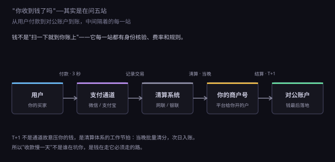
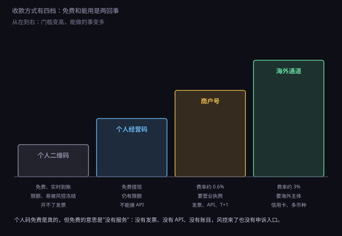
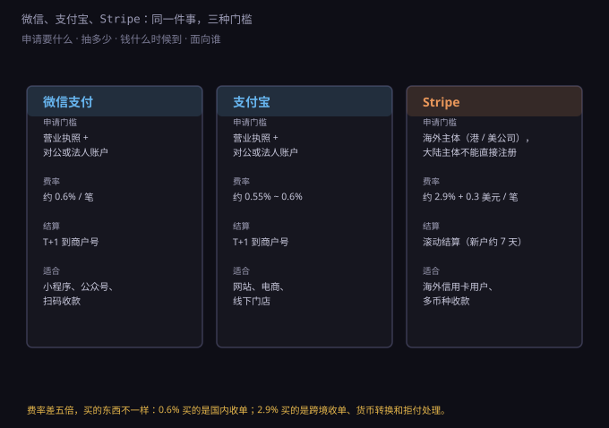

约 0.39 万字 · 3 张图 · 一笔钱从用户手机到你账户，中间隔着五道门
先问你一个问题：一个客户付了你一百块，你的公司账上多了多少钱？
多数人会答"一百"。少数人答"九十九块四"。 实际答案是：一百块里，有一部分从来就不是你的。
它被拆成了几份：通道手续费、可能的提现费、可能的快速到账费， 还有一笔在途资金——已经在通道的账上，但还没到你的对公账户。 你在后台看到的"今日收款 3200 元"，不等于"今天能花 3200 元"。
这就是收款这件事的第一个门槛： 它不是一个动作，是一条有节点的链路。 每个节点都有身份核验、费率、限额和规则；任何一环没打通，钱就停在半路。
从用户按下"支付"到他能在你的账上看到这笔钱，中间有五个站点。

第一站，用户。他扫码或者点按钮，本质上是在给支付软件下一条指令： 从我的零钱或银行卡里划走 X 元，给某个商户。 这一秒发生的事全在用户手机上，跟你没关系。
第二站，支付通道。微信支付、支付宝这类机构叫"收单机构"， 它们干两件事：把钱从用户那儿扣下来；判断这笔交易像不像诈骗。 你半夜三点收到的一笔异地大额付款，很可能就是被它拦下来的——不是因为有人举报你， 是模型觉得"这个用户平时不这样"。
第三站，清算系统。线上的第三方支付全部走网联，银行卡交易走银联。 这一层不碰你的商品，也不认识你，它只做一件事：把"某通道欠某商户多少钱"算清楚， 然后在当晚批量完成资金划转。
第四站，商户号。通道给你开的一个虚拟账户。 钱先记在这里，不进你的银行卡。你在商户后台看到的余额、流水、待结算金额，都是这个户里的数。
第五站，对公账户。你点"提现"，钱从商户号划到公司账户。 这一步才真正变成"公司的钱"，也才进入银行的流水，能被审计、能被放贷参考。
五站走完，一笔钱才算落袋。而绝大多数收款事故，都发生在第二站到第五站之间—— 用户说"我付了"，你的后台说"没收到"，钱卡在中间某一站。
第三站看起来最没用：通道已经扣了钱，直接打给商户不就行了，为什么要多插一层？
因为如果没有它，支付公司就同时是记账的人、清算的人和保管钱的人。 用户的钱进了它的备付金账户，它拿这笔钱去放贷、去投资、去填别的窟窿， 等哪天周转不过来，用户和商户一起发现钱没了。
这不是假想。2017 年之前，第三方支付的备付金分散在各家银行，监管看不到全貌。 网联成立之后，所有第三方支付机构的网络支付业务必须经过它转接， 备付金 100% 集中存管——支付公司碰不到这笔钱，只能看到数字。
这条规矩对做生意的人有一个直接推论： 谁碰钱，谁就要有牌照。
如果你做一个平台，让买家把钱付给你，你再转给卖家， 你就在做"二次清算"（业内叫二清）。平台自己没有支付牌照却经手了别人的资金， 这是无证经营支付业务，属于明确的违规： 轻则通道给你关掉，重则按非法经营处理。
所以正规的平台电商必须这么接：买家的钱直接进卖家自己的商户号， 平台只拿分账（服务费），资金不经过平台的对公账户。 你看到的所有"平台代收、平台统一结算"，背后一定有一张支付牌照或者一个持牌机构在中间。
商户后台常见三个字：T+1。这个 T 不是"天"，是 Transaction，交易日。 +1 也不是"一天"，是"一个工作日"。
合起来：周五的交易，周一到账；周六周日的交易，一起周一到； 国庆前最后一天的交易，假期结束才到。春节前后压七天是常事。
这就把上一章算过的现金跑道改写了一遍。 你按"每天收款五千"算出月末有十五万现金， 实际月末账上可能只有十二万——剩下三万全在途。 现金流吃紧的时候，这三万就是发不出工资和发得出工资的差别。
想快一点？通道提供 T+0 或者 D+0，本质是它先垫钱给你，所以加收费用， 常见是每笔加 0.1% 到 0.3%，或者按笔收固定几毛。 月流水十万的话，这相当于每月再交一百到三百。
还有一个容易被忽略的细节：结算起点。 很多通道规定商户号余额满一定金额（比如 100 元或 500 元）才发起结算， 余额不到就一直挂着。小流水的新站，第一周可能一分钱都提不出来。
个人收款码看起来完胜商户号：不要执照、不要审核、免费、钱实时进零钱， 连手续费都没有（提现超过免费额度才收 0.1%）。
那为什么正经做生意的人还要去申请商户号、交那 0.6%？ 因为个人码有四条断头路，每一条都能让你在某个时刻卡死。
第一条，限额和风控。 个人码有单笔和单日的收款上限，而且模型专盯"不像个人"的收款： 异地、夜间、短时间高频、金额整齐。 一旦触发，限制收款、冻结余额、要求你说明资金来源。 个人码的申诉入口极弱，你连个客户经理都找不到。
第二条，发票。 客户要增值税发票，你得开。个人没法自开发票， 只能去税务局代开，一来慢，二来你的流水性质会被重新审视。 而 B 端客户里，不要发票的是少数。
第三条，API。 个人码没有回调通知。用户付了钱，你的系统不知道， 只能靠人盯着手机看，然后手动发货。 任何要自动确认订单、自动开会员、自动发货的生意，这一条就过不去。
第四条，账目。 个人码的流水进的是你个人的微信零钱，和公司账混在一起。 报税的时候这笔钱算什么？收入没申报是偷税， 申报了又没法证明成本，等于全额交所得税。 这一条在 8.3 讲报税日历的时候已经埋过了。
中间还有一个过渡形态：个人经营收款码。 个体户拿执照去申请，费率很低甚至免费提现，比个人码正规， 但依然有限额、没有 API、开票要另想办法。开小店够用，做网站不够。
所以判断标准只有一句话：只要你要开发票、要自动确认订单、要把流水做大，就得走商户号。 免费的不是优惠，是没服务。
把这几种方式排一排，会看到一条很整齐的线：门槛、能力、成本三者同向变化。

第一档，个人二维码。零门槛、零费率，也零能力。
第二档，个人经营收款码。要个体户执照，费率极低， 能覆盖线下小店，覆盖不了网站。
第三档，商户号。要营业执照、对公账户、备案域名， 换来 0.6% 左右的费率、T+1 结算、正式发票、完整的 API 和回调。 这是所有正经线上生意的起点。
第四档，海外通道。要海外主体，费率跳到 3% 上下， 换来的是 Visa、Mastercard 用户和多币种结算——也就是"你的客户在国外"这件事本身。
选哪一档，不取决于你想省多少手续费，取决于你的客户在哪里、要不要发票、要不要自动化。 这三个问题的答案，基本就把档位定死了。
第三档里的国内双巨头，条件和费率几乎一样，差别在生态。

微信支付，标准费率 0.6%，要营业执照和对公账户（部分主体可用法人账户）， T+1 结算。它是小程序和公众号的唯一选择—— 用户在微信里买东西，不可能跳出微信去支付宝付款。 扫码、H5、Native 支付也都支持，但 H5 要求域名已备案。
支付宝，费率 0.55% 到 0.6%，条件基本一样。 PC 网站、手机网站、当面付是它的主场。 早几年"网上买东西用支付宝"的习惯还在，做独立站的话两个都接，成本只是多写一套 SDK。
这两家的费率不是铁板：月流水到一定量级可以申请行业优惠， 教育、公益、部分民生类目能到 0.2% 到 0.38%。 但小站没必要折腾，一年省下的钱不够一顿饭。
Stripe 是另一回事。它不做人民币收单，做的是信用卡收单： 用户输卡号，Stripe 负责授权、扣款、结算、退款、拒付处理，覆盖一百多个币种。
它的定价按地区分：美国 2.9% + 0.3 美元一笔，香港 3.4% + 2.35 港元， 欧洲本地卡便宜一些。结算默认是滚动七天，新账户更久。
关键的一条：Stripe 不支持中国大陆主体注册。 想用它，只有三条路—— 注册香港、美国或新加坡公司并开当地银行账户； 走 MoR（Merchant of Record，记录商户），让 Paddle、Creem 这类公司当法律上的卖家； 或者干脆只用 PayPal 收款（一样要主体，只是门槛略低）。
MoR 这个词值得解释一句。它的意思是：卖东西的人在法律上是它，不是你。 它收用户的钱、扣掉自己的抽成（通常 5% 起）、代扣当地增值税、再把净额结算给你。 你失去的是 5%，换到的是"你不用在二十个国家注册税号"。
0.6% 和 2.9% 差五倍，看起来是同一件事的两种报价。其实不是同一件事。
0.6% 买的是：人民币收单、国内清算、T+1 结算、发票配套。 2.9% 买的是：跨境收单、实时汇率转换、拒付（chargeback）处理、 符合 PCI 的卡信息处理、以及"你的用户只有 Visa 卡"这个现实。
拒付是最容易被低估的一块。用户在银行说一句"我没买过这笔"， 银行先把钱划走，再来问你。你要在七到二十天内提交证据（物流、登录日志、IP）， 输了钱货两空，还要交一笔拒付费，Stripe 是 15 美元一笔。
而且拒付率是有红线的：长期超过 1%，卡组织会把你列入监控名单， 再高就直接终止收单资格。这意味着做跨境生意，客服响应速度和退款政策不是"服务体验"， 是收单资格的一部分。
还有一笔账要算：汇率。用户付美元，你收人民币， 中间有换汇点差，通常在 1% 上下。这不在费率表里，但确实在成本里。
所以选通道不是比数字，是比"你的客户用什么付钱"。 客户全在国内，接微信支付宝，2.9% 那套跟你无关； 客户一半在海外，2.9% 不是贵，是入场券。
把抽象费率换成钞票：卖一百块，到手九十九块四。 月流水十万，交六百；一年七千二。
七千二这个数，要从毛利里出。毛利 50% 的话， 相当于一万四千四的营业额白干。听着肉疼，于是有人开始想办法： 走私账、让客户转个人微信、用别人的码收款。
这条路省下的是七千二，失去的是四样东西。
第一，发票。没有对公收款就没有进项记录，B 端客户迟早走。 第二，对账。几百笔个人转账，月底你自己都对不清哪笔是哪单。 第三，银行流水。上一章说过，贷款看流水； 你的公司账上一年只有几万，银行给你的额度也只有几万。 第四，平台资质。应用商店、广告平台、云服务商的商户认证，都要对公收款证明。
我的看法很直白：手续费不是成本，是买"这笔钱是干净的"的价格。 一笔能被审计、能开发票、能进银行流水的收入， 和一笔躺在个人零钱里的收入，价值不在一个量级。
真要做，顺序是这样的，别倒过来。
一，营业执照和对公账户（8.2 那两节）。二，域名和 ICP 备案， 这一步最慢，通常要一到三周，而且备案期间网站不能对外提供服务， 所以它应该排在写代码之前。三，申请微信支付商户号和支付宝应用， 资料齐全的话一到三天。四，用沙箱环境跑通下单和回调。 五，小额真付一笔，确认钱到了对公账户。
最后一步里有个技术细节，值得单独说：回调必须验签。
支付成功后，通道会主动向你服务器发一个 POST 请求，告诉你"这单付了"。 如果你不验证这个请求的真伪，任何人用 curl 发一条一模一样的报文过来， 你的系统就会当成真的，给没付钱的人发货、开会员、加余额。 这类漏洞在开源项目里一直有，因为"能跑通"和"安全"是两件事。
验签要查三样：签名本身（用平台公钥或 APIv3 密钥验）、 金额和你本地订单是否一致、订单号是否存在且状态未变。 再补一条：同一笔订单的回调可能重复送达好几次， 所以处理逻辑必须幂等——第二次收到"已支付"，不能给用户加两次余额。
这条规矩不复杂，但它是"收款"和"收钱"的分界线： 前者有据可查、有账可对、有人负责；后者只是钱进来了。